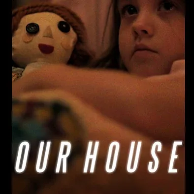

聞こえるはずのない声
アワ・ハウス
発明がきっかけで、家の気配が変わり始める。亡くした人にもう一度会いたい気持ちがいちばん怖い一本。
おすすめ度 ★ 2.5/5 · ホラー度 2.5/5人形、古い家、手製の装置。日常のすぐそばから怪異が始まる３本。

発明がきっかけで、家の気配が変わり始める。亡くした人にもう一度会いたい気持ちがいちばん怖い一本。
おすすめ度 ★ 2.5/5 · ホラー度 2.5/5
家族で越してきた一軒家に先客がいた。怖さの中で、家族の誰が先に反撃に出るかにも注目。
おすすめ度 ★ 3/5 · ホラー度 3/5
人形に愛情を注ぐほど、そばに置きたい気持ちも強くなる。家の中での人形の居場所に注目して。
おすすめ度 ★ 3/5 · ホラー度 3/5